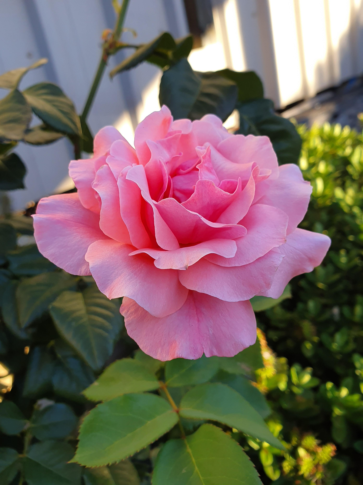

Mr. Lincoln
Leírás:
Bordó, bársonyos, telt virágú, erősen illatos, szálas virágú.
Gondozási tudnivalók:
Ültetés: A teahibryd rózsatövek általában egymástól 60 cm sor-, 40 cm tőtávolság legyenek. Metszés: A metszés ideje február vége, április közepe, de esetleg a tél elején is elvégezhetjük ezt a műveletet. Általános szabály, hogy 3-4 vázágat hagyunk, a gyenge növekedésűeket 3-4 szemre, a közepes növekedésűeket 5-6 szemre, az erős növekedésűeket 6-8 szemre metsszük. Metszeni mindig ferdén, közvetlenül 5-10 mm-rel a rügy felett kell úgy, hogy a rügy mindig a metszés magasabbik oldalán legyen. Tápanyag utánpótlás: Tápanyag utánpótlásra az ültetés évében nincs szükség. A második évtől dolgozzunk a talajba négyzetméterenként 5-10 kg istállótrágyát.
Bianca tearózsa
Leírás:
Hófehér, telt virágaival az elegancia megtestesítője.
Virág jellemzői:
Elegáns megjelenésű, hófehér virágú, dús virágzatú, enyhe illatú rózsafajta. Ültetési ideje: szabad gyökerű törzses növény március-április, illetve október-november, konténeres törzses változat egész évben telepíthető.
Növény jellemzői:
Erőteljes növekedés jellemzi, virágzási ideje ismétlődő, téli keményebb hónapokat jól viseli. Virágzási ideje: kora nyártól késő őszig (júniustól novemberig), az első fagyokig virágzik.
Sissi
Leírás:
Kifejezetten elegáns megjelenésű, különleges lila virága kitűnik a hagyományos rózsák közül, kellemes illatú, nagyvirágú.
Gondozási tudnivalók:
Ültetés: - szabadgyökerű példányokat kora tavasszal, február második felétől április közepéig, és ősszel október elejétől november végéig ültessünk - konténeres növények telepítése márciustól novemberig ajánlott.
Növény jellemzői:
Magas bokrot nevel, magassága kb. 150 cm, felálló ágrendszerű, téli fagyokat jól viseli, hosszú szárán hozza nagy virágát, jó minőségű vágott virág, hosszú virágzási idő jellemzi, betegségekkel szemben ellenálló.
Gaumó
Leírás:
Virág színe rózsaszín ezüstös fonákkal, egyedi színvilágával kitűnik a klasszikus rózsaszín fajták közül, teltvirágú, enyhén illatos.
Gondozási tudnivalók:
- szabadgyökerű tövek ültetése március-április, illetve október-november hónapokban ideális - konténeres növények majd egész évben, márciustól novemberig telepíthetők
Növény jellemzői:
A bokor magassága kb. 80-100 cm, elágazó ágrendszerű, hosszú szárán hozza nagy virágát, jó minőségű vágott virág és folyamatos virágzás jellemzi, abszolút télálló, betegségekkel szemben toleráns.
Queen Elisabeth

Leírás:
Rózsaszín, finom, szép állású, kecses, telt virágok jellemzik, kellemesen édes illatú.
Gondozási tudnivalók:
Ültetés: - szabadgyökerű példányokat kora tavasszal, február második felétől április közepéig, és ősszel október elejétől november végéig ültessünk - konténeres növények telepítése márciustól novemberig ajánlott.
Növény jellemzői:
Az egyik legnemesebb fajta, erőteljes, felfelé törekvő növekedés jellemzi, az egyik legmagasabb tearózsa, elérheti a 150-200 cm-t is, erőteljes növekedésének köszönhetően elviseli a mostohább körülményeket is, így félárnyékban is szépen fejlődik, fagytűrő képessége figyelemre méltó, talajban nem válogat.